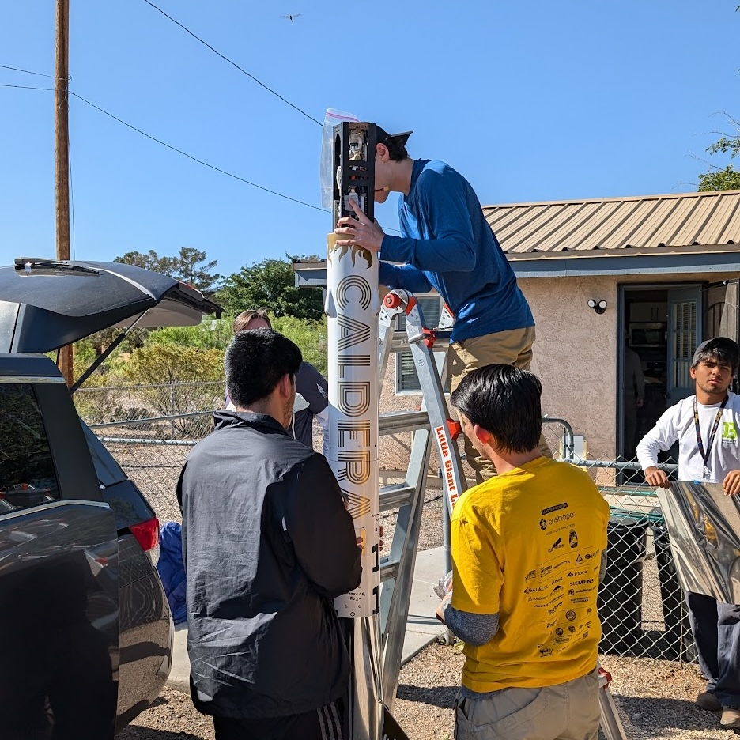

Who We Are
STAR boasts the longest and most successful launch history on campus, with a total of eight complete vehicles engineered over our half-decade lifetime, and a liquid engine!
These vehicles have been completely student-designed and tested, from our in-house avionics to our liquid-fuel propulsion to our array of payloads -- ranging from microbial power cells to muon detectors, and even rocket-deployed aircraft! STAR also boasts the longest competition history on campus, having previously launched as NASA Student Launch, and now participating in the ESRA Spaceport America Cup.
Our Ambitions
Competitions
Reaching new heights in national and international rocketry competitions

Connections
Gaining industry-level experience and making lifelong friendships

Comminity
Educating local students and residents about aerospace technologies
Sounds Interesting?
What makes STAR special is that we are a very education-focused team, and new members do not need any prior experience at all -- we teach them everything they need to know! We pair all new members with a mentor and have them complete an intro project which will teach them everything they need to know to become a fully functional member of our team.
We have a variety of sub-teams available to our members like airframe, avionics, propulsion, payload, recovery, operations, systems, business, outreach, and media. We welcome all majors and backgrounds!
Regular recruitment season begins at the start of Fall semester, though if you are super passionate please contact the lead of the team you are interested in to enquirement further information (Found under Teams > Specialty Leads)
